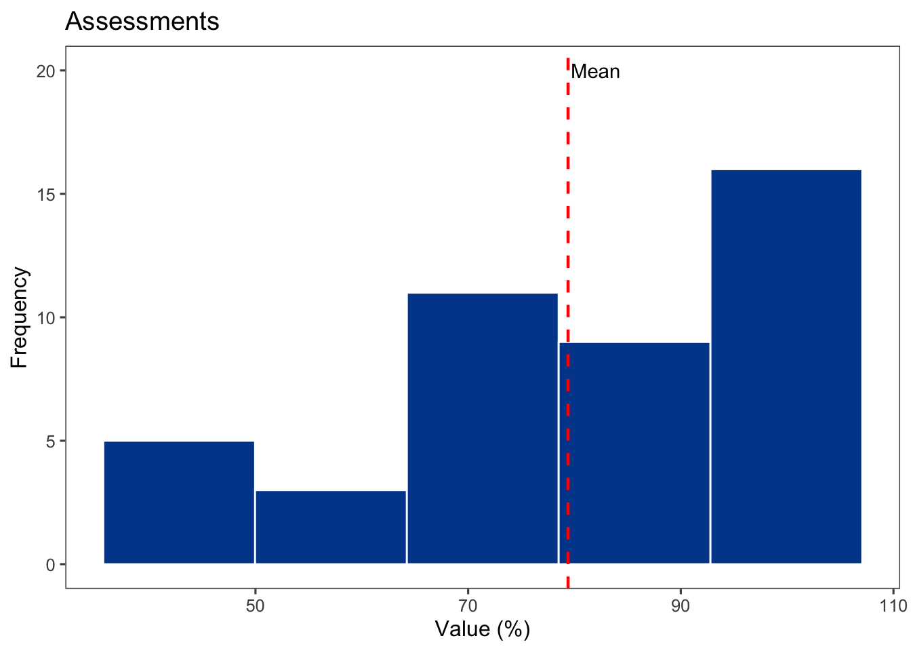
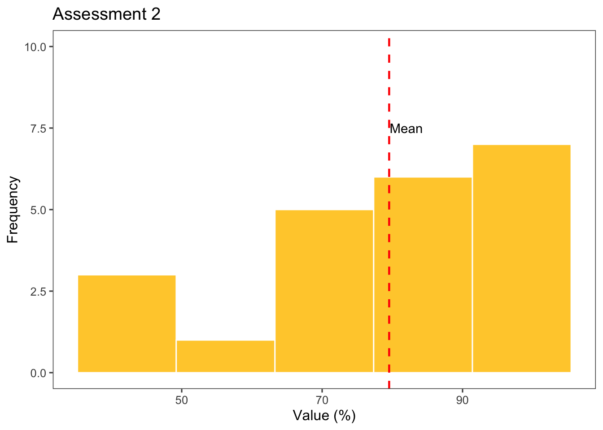
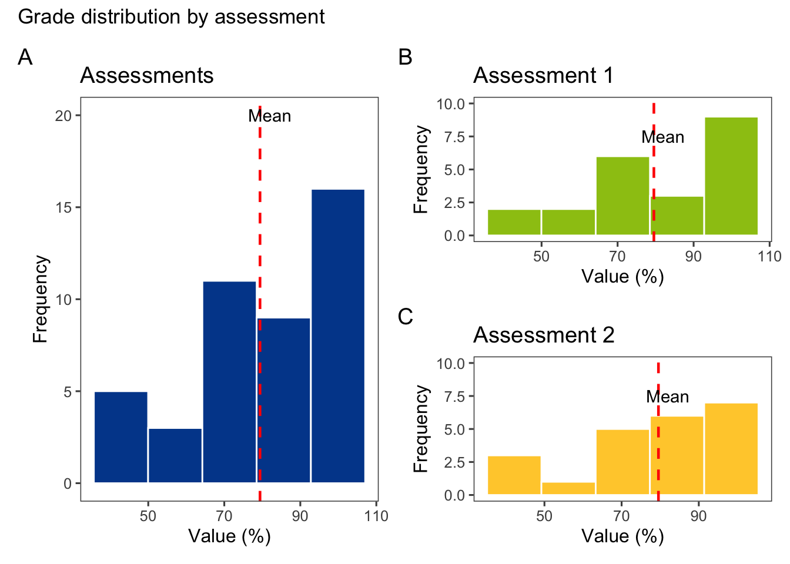
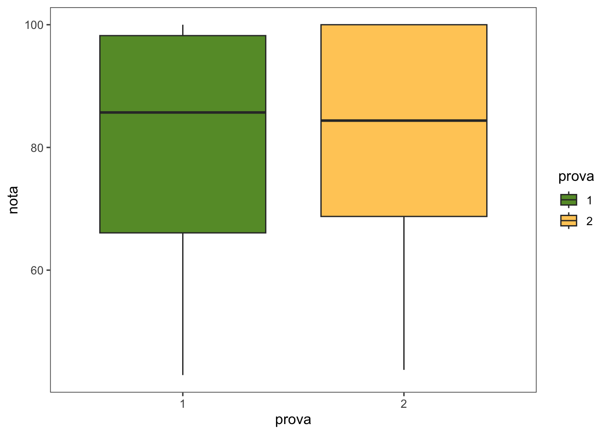

A continuación se explica el paso a paso del script, describiendo las funciones importantes utilizadas y los paquetes empleados en cada paso.
1. Cargar Paquetes
El primer paso es cargar los paquetes necesarios para la ejecución del script. Estos paquetes proporcionan diversas funciones para la manipulación, visualización y análisis de datos.
Codigo
# datapasta: Facilita el copiado y pegado de datos entre R y otras aplicaciones.library(datapasta)# r4pde: Paquete específico para la resolución de ecuaciones en derivadas parciales (PDE).library(r4pde)# janitor: Proporciona funciones para la limpieza de datos, como la normalización de nombres de columnas.library(janitor)# gsheet: Permite importar datos desde Google Sheets.library(gsheet)# googlesheets4: También permite importar datos desde Google Sheets con mayor funcionalidad.library(googlesheets4)# tidyverse: Conjunto de paquetes para la manipulación y visualización de datos, incluyendo dplyr, ggplot2, tidyr, entre otros.library(tidyverse)# cowplot: Extiende ggplot2 para combinar múltiples gráficos en uno solo.library(cowplot)# patchwork: Facilita la creación de composiciones de múltiples gráficos.library(patchwork)# ggthemes: Proporciona temas adicionales para ggplot2.library(ggthemes)# epifitter: Herramientas para el ajuste de modelos epidemiológicos.library(epifitter)# ggplot2: Parte del tidyverse, utilizado para crear visualizaciones gráficas.library(ggplot2)# nlme: Proporciona herramientas para el ajuste de modelos de efectos mixtos.library(nlme)# lme4: Similar a nlme, también se utiliza para el ajuste de modelos de efectos mixtos.library(lme4)# DHARMa: Ofrece métodos para el diagnóstico de modelos estadísticos mediante simulaciones.library(DHARMa)# performance: Evalúa el rendimiento de los modelos ajustados.library(performance)# report: Automatiza la generación de informes de análisis estadísticos.library(report)# emmeans: Estima medias marginales y realiza contrastes.library(emmeans)# multcompView: Facilita la visualización de pruebas de comparaciones múltiples.library(multcompView)# multcomp: Permite realizar pruebas de comparaciones múltiples.library(multcomp)# corrplot: Herramientas para la visualización de matrices de correlación.library(corrplot)# see: Proporciona funciones para la visualización de datos.library(see)# lubridate: Facilita el manejo y la manipulación de datos de fechas y horas.library(lubridate)# agridat: Datos agrícolas para el análisis estadístico.library(agridat)# agricolae: Herramientas para el análisis estadístico en la agricultura.library(agricolae)# sf: Proporciona herramientas para la manipulación y análisis de datos espaciales simples.library(sf)# broom: Convierte modelos estadísticos en tibbles ordenados.library(broom)# lattice: Permite la creación de gráficos multivariados.library(lattice)# car: Proporciona herramientas para el análisis de regresión.library(car)# scales: Herramientas para el manejo de escalas en ggplot2.library(scales)# readxl: Permite importar datos desde archivos Excel.library(readxl)# dplyr: Parte del tidyverse, utilizado para la manipulación de datos.library(dplyr)# knitr: Herramientas para la generación de informes dinámicos.library(knitr)# kableExtra: Extiende knitr para la creación de tablas dinámicas.library(kableExtra)# easyanova: Herramientas para el análisis de varianza (ANOVA).library(easyanova)# tidyr: Parte del tidyverse, utilizado para la organización de datos.library(tidyr)# PerformanceAnalytics: Herramientas para el análisis de rendimiento financiero.library(PerformanceAnalytics)# magrittr: Proporciona operadores de tuberías para mejorar la legibilidad del código.library(magrittr)# ggpubr: Facilita la creación y publicación de gráficos hechos con ggplot2.library(ggpubr)# rstatix: Simplifica la ejecución de análisis estadísticos comunes.library(rstatix)# reshape: Herramientas para la reestructuración de datos.library(reshape)# formattable: Permite la creación de tablas formateadas en HTML.library(formattable)# sjPlot: Herramientas para la visualización de resultados estadísticos.library(sjPlot)# sjlabelled: Herramientas para trabajar con etiquetas en datos.library(sjlabelled)# sjmisc: Herramientas para la manipulación de datos.library(sjmisc)# ggh4x: Extensiones adicionales para ggplot2.library(ggh4x)# gridExtra: Permite la disposición de gráficos en una cuadrícula.library(gridExtra)# stringr: Parte del tidyverse, utilizado para la manipulación de cadenas de caracteres.library(stringr)# epiR: Herramientas para el análisis epidemiológico.library(epiR)# ggridges: Permite la creación de gráficos de densidad en forma de crestas.library(ggridges)# DT: Permite la creación de tablas interactivas en HTML.library(DT)
2. Importar Datos
En esta sección se importan los datos desde una hoja de cálculo de Google Sheets utilizando el paquete googlesheets4. Se convierte la variable prova en un factor y se muestra una tabla interactiva utilizando el paquete DT.
Codigo
# Importar datos desde Google Sheetsdfprova <-gsheet2tbl("https://docs.google.com/spreadsheets/d/1bq2N19DcZdtax2fQW9OHSGMR0X2__Z9T/edit#gid=1092065531")# Convertir la variable 'prova' en un factordfprova$prova <-as.factor(dfprova$prova)# Mostrar los datos en una tabla interactivadfprova |> DT::datatable(extensions ='Buttons', options =list(dom ='Bfrtip', buttons =c('excel', "csv")))
Este código importa los datos desde una URL específica de Google Sheets, convierte la columna prova en un factor (útil para análisis categóricos) y muestra los datos en una tabla interactiva que permite exportar a Excel o CSV.
3. Resumen de Datos
Se genera un resumen básico para todas las variables numéricas del data frame utilizando la función summary().
Codigo
# Generar un resumen de las variables numéricasSummarydb_all <- dfprova |>summary()Summarydb_all
prova pontos nota
1:22 Min. : 6.00 Min. : 42.90
2:22 1st Qu.:10.00 1st Qu.: 68.75
Median :12.50 Median : 85.70
Mean :11.91 Mean : 79.40
3rd Qu.:14.00 3rd Qu.:100.00
Max. :16.00 Max. :100.00
La función summary() proporciona estadísticas descriptivas como mínimo, máximo, mediana, y cuartiles para todas las variables numéricas del dataframe dfprova.
4. Cálculo de Cuantiles
Se calculan los cuantiles de la variable nota utilizando quantile() y se transforman en un data frame. Luego, se muestra en una tabla interactiva.
Codigo
# Calcular los cuantiles de la variable 'nota'Quantile_ <-quantile(dfprova$nota)Quantile_ <-as.data.frame(Quantile_)# Mostrar los cuantiles en una tabla interactivaQuantile_ |> DT::datatable(extensions ='Buttons', options =list(dom ='Bfrtip', buttons =c('excel', "csv"))) |>formatRound("Quantile_", 2)
El código calcula los cuantiles de la variable nota, los almacena en un dataframe y luego los muestra en una tabla interactiva que permite exportar los resultados.
5. Histogramas
Histograma General
Se crea un histograma general de la variable nota usando ggplot2. Se utiliza geom_histogram() para crear el histograma y geom_vline() para añadir una línea que indica la media.
Codigo
# Crear un histograma general de la variable 'nota'Provas <- dfprova |>ggplot(aes(x = nota)) +geom_histogram(bins =5, fill ="#00489a", color ="white") +geom_vline(xintercept =79.40, linetype ="dashed", color ="red", size = .8) +theme_few() +annotate(geom ="text", x =82, y =20, label ="Mean") +labs(y ="Frequency", x ="Value (%)", title ="Assessments")Provas

Este bloque de código genera un histograma de la variable nota, utilizando cinco bins (barras), con una línea punteada en color rojo que representa la media de las notas.
Histogramas de Subconjuntos
Se crean histogramas específicos para cada valor de la variable prova utilizando ggplot2 y dplyr para filtrar y resumir los datos.
Prova_2_p <- dfprova |>filter(prova =="2") |>ggplot(aes(x = nota)) +geom_histogram(bins =5, fill ="#ffcd38", color ="white") +geom_vline(xintercept = Prova_1$nota_mean, linetype ="dashed", color ="red", size = .8) +theme_few() +annotate(geom ="text", x =82, y =7.5, label ="Mean") +ylim(0, 10) +labs(y ="Frequency", x ="Value (%)", title ="Assessment 2")Prova_2_p

Estos bloques de código generan histogramas separados para cada valor único de la variable prova (en este caso, “1” y “2”). Se calculan las estadísticas descriptivas como la media, la mediana y la desviación estándar, que se muestran en tablas interactivas. Además, se crea un histograma para cada valor de prova con una línea punteada que indica la media.
6. Combinar Histogramas
Continuando con la explicación:
Se combinan los histogramas en una sola visualización utilizando el paquete patchwork, que permite la creación de composiciones de múltiples gráficos.
Codigo
# Combinar los histogramas en una sola visualización(Provas | (Prova_1_p / Prova_2_p)) +plot_layout(guides ="collect", axes ="collect") +plot_annotation(tag_levels ="A", title ="Grade distribution by assessment")

A tener en cuenta dentro del código:
(Provas | (Prova_1_p / Prova_2_p)): Utiliza la operación | de patchwork para combinar los gráficos. Provas es el histograma general de todas las notas. (Prova_1_p / Prova_2_p) crea una composición de los histogramas específicos para prova 1 y prova 2.
plot_layout(guides = "collect", axes = "collect"): Organiza los ejes y las leyendas para que se muestren de manera adecuada en la composición.
plot_annotation(tag_levels = "A", title = "Grade distribution by assessment"): Añade un título principal a la visualización.
Este código genera una sola visualización que muestra la distribución de las notas agrupadas por prova, proporcionando una comparación entre los histogramas general y específicos.
7. Resumen de Notas Agrupado
A continuación, se genera un resumen de las notas agrupado por prova utilizando group_by() y summarize(), y se muestra en una tabla interactiva.
Codigo
# Generar un resumen de las notas agrupado por 'prova'data_nota <- dfprova |>group_by(prova) |>summarize(nota_mean =mean(nota), nota_med =median(nota), nota_sd =sd(nota))data_nota |> DT::datatable(extensions ='Buttons',options =list(dom ='Bfrtip',buttons =c('excel', "csv"))) |>formatRound(c('nota_mean', 'nota_med', 'nota_sd'), 2)
En este código:
group_by(prova): Agrupa los datos por cada valor único de prova.
summarize(nota_mean = mean(nota), nota_med = median(nota), nota_sd = sd(nota)): Calcula la media, mediana y desviación estándar de la variable nota para cada grupo de prova.
DT::datatable(): Muestra los resultados en una tabla interactiva utilizando el paquete DT, con opciones para exportar a Excel o CSV.
Esta tabla proporciona un resumen estadístico clave que resume la distribución de las notas agrupadas por cada tipo de evaluación (prova).
8. Boxplot de Notas
Finalmente, se crea un boxplot para visualizar la distribución de las notas por prova utilizando geom_boxplot() y geom_jitter() para añadir puntos de dispersión.
Codigo
# Crear un boxplot de las notas por 'prova'P1 <- dfprova |>group_by(prova) |>ggplot(aes(prova, nota, group = prova, fill = prova)) +geom_boxplot()+theme_few()+scale_fill_manual(values =c("#669933", "#FFCC66")) P1

En este bloque de código:
group_by(prova): Agrupa los datos por cada valor único de prova.
ggplot(aes(prova, nota, group = prova, fill = prova)): Define prova como el eje x, nota como el eje y, y utiliza fill = prova para colorear los boxplots según prova.
geom_boxplot(): Crea los boxplots para visualizar la distribución de las notas.
Este gráfico proporciona una representación visual de cómo se distribuyen las notas en cada tipo de evaluación, permitiendo identificar diferencias en la dispersión y la mediana entre los grupos.
Aprendizaje del día
El script proporciona un análisis detallado de los datos, incluyendo importación, resúmenes estadísticos, visualizaciones de distribución y comparación entre diferentes tipos de evaluación. Cada sección utiliza paquetes específicos de R para realizar operaciones estadísticas y generar visualizaciones interactivas y claras.
Source Code
## Ejemplo completo de Visualización de DatosA continuación se explica el paso a paso del script, describiendo las funciones importantes utilizadas y los paquetes empleados en cada paso.### 1. Cargar PaquetesEl primer paso es cargar los paquetes necesarios para la ejecución del script. Estos paquetes proporcionan diversas funciones para la manipulación, visualización y análisis de datos.```{r}# datapasta: Facilita el copiado y pegado de datos entre R y otras aplicaciones.library(datapasta)# r4pde: Paquete específico para la resolución de ecuaciones en derivadas parciales (PDE).library(r4pde)# janitor: Proporciona funciones para la limpieza de datos, como la normalización de nombres de columnas.library(janitor)# gsheet: Permite importar datos desde Google Sheets.library(gsheet)# googlesheets4: También permite importar datos desde Google Sheets con mayor funcionalidad.library(googlesheets4)# tidyverse: Conjunto de paquetes para la manipulación y visualización de datos, incluyendo dplyr, ggplot2, tidyr, entre otros.library(tidyverse)# cowplot: Extiende ggplot2 para combinar múltiples gráficos en uno solo.library(cowplot)# patchwork: Facilita la creación de composiciones de múltiples gráficos.library(patchwork)# ggthemes: Proporciona temas adicionales para ggplot2.library(ggthemes)# epifitter: Herramientas para el ajuste de modelos epidemiológicos.library(epifitter)# ggplot2: Parte del tidyverse, utilizado para crear visualizaciones gráficas.library(ggplot2)# nlme: Proporciona herramientas para el ajuste de modelos de efectos mixtos.library(nlme)# lme4: Similar a nlme, también se utiliza para el ajuste de modelos de efectos mixtos.library(lme4)# DHARMa: Ofrece métodos para el diagnóstico de modelos estadísticos mediante simulaciones.library(DHARMa)# performance: Evalúa el rendimiento de los modelos ajustados.library(performance)# report: Automatiza la generación de informes de análisis estadísticos.library(report)# emmeans: Estima medias marginales y realiza contrastes.library(emmeans)# multcompView: Facilita la visualización de pruebas de comparaciones múltiples.library(multcompView)# multcomp: Permite realizar pruebas de comparaciones múltiples.library(multcomp)# corrplot: Herramientas para la visualización de matrices de correlación.library(corrplot)# see: Proporciona funciones para la visualización de datos.library(see)# lubridate: Facilita el manejo y la manipulación de datos de fechas y horas.library(lubridate)# agridat: Datos agrícolas para el análisis estadístico.library(agridat)# agricolae: Herramientas para el análisis estadístico en la agricultura.library(agricolae)# sf: Proporciona herramientas para la manipulación y análisis de datos espaciales simples.library(sf)# broom: Convierte modelos estadísticos en tibbles ordenados.library(broom)# lattice: Permite la creación de gráficos multivariados.library(lattice)# car: Proporciona herramientas para el análisis de regresión.library(car)# scales: Herramientas para el manejo de escalas en ggplot2.library(scales)# readxl: Permite importar datos desde archivos Excel.library(readxl)# dplyr: Parte del tidyverse, utilizado para la manipulación de datos.library(dplyr)# knitr: Herramientas para la generación de informes dinámicos.library(knitr)# kableExtra: Extiende knitr para la creación de tablas dinámicas.library(kableExtra)# easyanova: Herramientas para el análisis de varianza (ANOVA).library(easyanova)# tidyr: Parte del tidyverse, utilizado para la organización de datos.library(tidyr)# PerformanceAnalytics: Herramientas para el análisis de rendimiento financiero.library(PerformanceAnalytics)# magrittr: Proporciona operadores de tuberías para mejorar la legibilidad del código.library(magrittr)# ggpubr: Facilita la creación y publicación de gráficos hechos con ggplot2.library(ggpubr)# rstatix: Simplifica la ejecución de análisis estadísticos comunes.library(rstatix)# reshape: Herramientas para la reestructuración de datos.library(reshape)# formattable: Permite la creación de tablas formateadas en HTML.library(formattable)# sjPlot: Herramientas para la visualización de resultados estadísticos.library(sjPlot)# sjlabelled: Herramientas para trabajar con etiquetas en datos.library(sjlabelled)# sjmisc: Herramientas para la manipulación de datos.library(sjmisc)# ggh4x: Extensiones adicionales para ggplot2.library(ggh4x)# gridExtra: Permite la disposición de gráficos en una cuadrícula.library(gridExtra)# stringr: Parte del tidyverse, utilizado para la manipulación de cadenas de caracteres.library(stringr)# epiR: Herramientas para el análisis epidemiológico.library(epiR)# ggridges: Permite la creación de gráficos de densidad en forma de crestas.library(ggridges)# DT: Permite la creación de tablas interactivas en HTML.library(DT)```### 2. Importar DatosEn esta sección se importan los datos desde una hoja de cálculo de Google Sheets utilizando el paquete `googlesheets4`. Se convierte la variable `prova` en un factor y se muestra una tabla interactiva utilizando el paquete `DT`.```{r}# Importar datos desde Google Sheetsdfprova <-gsheet2tbl("https://docs.google.com/spreadsheets/d/1bq2N19DcZdtax2fQW9OHSGMR0X2__Z9T/edit#gid=1092065531")# Convertir la variable 'prova' en un factordfprova$prova <-as.factor(dfprova$prova)# Mostrar los datos en una tabla interactivadfprova |> DT::datatable(extensions ='Buttons', options =list(dom ='Bfrtip', buttons =c('excel', "csv")))```Este código importa los datos desde una URL específica de Google Sheets, convierte la columna `prova` en un factor (útil para análisis categóricos) y muestra los datos en una tabla interactiva que permite exportar a Excel o CSV.### 3. Resumen de DatosSe genera un resumen básico para todas las variables numéricas del data frame utilizando la función `summary()`.```{r}# Generar un resumen de las variables numéricasSummarydb_all <- dfprova |>summary()Summarydb_all```La función `summary()` proporciona estadísticas descriptivas como mínimo, máximo, mediana, y cuartiles para todas las variables numéricas del dataframe `dfprova`.### 4. Cálculo de CuantilesSe calculan los cuantiles de la variable `nota` utilizando `quantile()` y se transforman en un data frame. Luego, se muestra en una tabla interactiva.```{r}# Calcular los cuantiles de la variable 'nota'Quantile_ <-quantile(dfprova$nota)Quantile_ <-as.data.frame(Quantile_)# Mostrar los cuantiles en una tabla interactivaQuantile_ |> DT::datatable(extensions ='Buttons', options =list(dom ='Bfrtip', buttons =c('excel', "csv"))) |>formatRound("Quantile_", 2)```El código calcula los cuantiles de la variable `nota`, los almacena en un dataframe y luego los muestra en una tabla interactiva que permite exportar los resultados.### 5. Histogramas##### Histograma GeneralSe crea un histograma general de la variable `nota` usando `ggplot2`. Se utiliza `geom_histogram()` para crear el histograma y `geom_vline()` para añadir una línea que indica la media.```{r}# Crear un histograma general de la variable 'nota'Provas <- dfprova |>ggplot(aes(x = nota)) +geom_histogram(bins =5, fill ="#00489a", color ="white") +geom_vline(xintercept =79.40, linetype ="dashed", color ="red", size = .8) +theme_few() +annotate(geom ="text", x =82, y =20, label ="Mean") +labs(y ="Frequency", x ="Value (%)", title ="Assessments")Provas ```Este bloque de código genera un histograma de la variable `nota`, utilizando cinco bins (barras), con una línea punteada en color rojo que representa la media de las notas.##### Histogramas de SubconjuntosSe crean histogramas específicos para cada valor de la variable `prova` utilizando `ggplot2` y `dplyr` para filtrar y resumir los datos.```{r}# Histograma y estadísticas descriptivas para 'prova' 1Prova_1 <- dfprova |>group_by(prova) |>filter(prova =="1") |>summarize(nota_mean =mean(nota), nota_med =median(nota), nota_sd =sd(nota))Prova_1 |> DT::datatable(extensions ='Buttons', options =list(dom ='Bfrtip', buttons =c('excel', "csv"))) |>formatRound(c('nota_mean', 'nota_med', 'nota_sd'), 2)Prova_1_p <- dfprova |>filter(prova =="1") |>ggplot(aes(x = nota)) +geom_histogram(bins =5, fill ="#9cc414", color ="white") +geom_vline(xintercept = Prova_1$nota_mean, linetype ="dashed", color ="red", size = .8) +theme_few() +annotate(geom ="text", x =82, y =7.5, label ="Mean") +ylim(0, 10) +labs(y ="Frequency", x ="Value (%)", title ="Assessment 1")Prova_1_p # Histograma y estadísticas descriptivas para 'prova' 2Prova_2 <- dfprova |>group_by(prova) |>filter(prova =="2") |>summarize(nota_mean =mean(nota), nota_med =median(nota), nota_sd =sd(nota))Prova_2 |> DT::datatable(extensions ='Buttons', options =list(dom ='Bfrtip', buttons =c('excel', "csv"))) |>formatRound(c('nota_mean', 'nota_med', 'nota_sd'), 2)Prova_2_p <- dfprova |>filter(prova =="2") |>ggplot(aes(x = nota)) +geom_histogram(bins =5, fill ="#ffcd38", color ="white") +geom_vline(xintercept = Prova_1$nota_mean, linetype ="dashed", color ="red", size = .8) +theme_few() +annotate(geom ="text", x =82, y =7.5, label ="Mean") +ylim(0, 10) +labs(y ="Frequency", x ="Value (%)", title ="Assessment 2")Prova_2_p ```Estos bloques de código generan histogramas separados para cada valor único de la variable `prova` (en este caso, "1" y "2"). Se calculan las estadísticas descriptivas como la media, la mediana y la desviación estándar, que se muestran en tablas interactivas. Además, se crea un histograma para cada valor de `prova` con una línea punteada que indica la media.### 6. Combinar HistogramasContinuando con la explicación:Se combinan los histogramas en una sola visualización utilizando el paquete `patchwork`, que permite la creación de composiciones de múltiples gráficos.```{r}# Combinar los histogramas en una sola visualización(Provas | (Prova_1_p / Prova_2_p)) +plot_layout(guides ="collect", axes ="collect") +plot_annotation(tag_levels ="A", title ="Grade distribution by assessment")```A tener en cuenta dentro del código:- `(Provas | (Prova_1_p / Prova_2_p))`: Utiliza la operación `|` de `patchwork` para combinar los gráficos. `Provas` es el histograma general de todas las notas. `(Prova_1_p / Prova_2_p)` crea una composición de los histogramas específicos para `prova` 1 y `prova` 2.- `plot_layout(guides = "collect", axes = "collect")`: Organiza los ejes y las leyendas para que se muestren de manera adecuada en la composición.- `plot_annotation(tag_levels = "A", title = "Grade distribution by assessment")`: Añade un título principal a la visualización.Este código genera una sola visualización que muestra la distribución de las notas agrupadas por `prova`, proporcionando una comparación entre los histogramas general y específicos.### 7. Resumen de Notas AgrupadoA continuación, se genera un resumen de las notas agrupado por `prova` utilizando `group_by()` y `summarize()`, y se muestra en una tabla interactiva.```{r}# Generar un resumen de las notas agrupado por 'prova'data_nota <- dfprova |>group_by(prova) |>summarize(nota_mean =mean(nota), nota_med =median(nota), nota_sd =sd(nota))data_nota |> DT::datatable(extensions ='Buttons',options =list(dom ='Bfrtip',buttons =c('excel', "csv"))) |>formatRound(c('nota_mean', 'nota_med', 'nota_sd'), 2)```En este código:- `group_by(prova)`: Agrupa los datos por cada valor único de `prova`.- `summarize(nota_mean = mean(nota), nota_med = median(nota), nota_sd = sd(nota))`: Calcula la media, mediana y desviación estándar de la variable `nota` para cada grupo de `prova`.- `DT::datatable()`: Muestra los resultados en una tabla interactiva utilizando el paquete `DT`, con opciones para exportar a Excel o CSV.Esta tabla proporciona un resumen estadístico clave que resume la distribución de las notas agrupadas por cada tipo de evaluación (`prova`).### 8. Boxplot de NotasFinalmente, se crea un boxplot para visualizar la distribución de las notas por `prova` utilizando `geom_boxplot()` y `geom_jitter()` para añadir puntos de dispersión.```{r}# Crear un boxplot de las notas por 'prova'P1 <- dfprova |>group_by(prova) |>ggplot(aes(prova, nota, group = prova, fill = prova)) +geom_boxplot()+theme_few()+scale_fill_manual(values =c("#669933", "#FFCC66")) P1```En este bloque de código:- `group_by(prova)`: Agrupa los datos por cada valor único de `prova`.- `ggplot(aes(prova, nota, group = prova, fill = prova))`: Define `prova` como el eje x, `nota` como el eje y, y utiliza `fill = prova` para colorear los boxplots según `prova`.- `geom_boxplot()`: Crea los boxplots para visualizar la distribución de las notas.Este gráfico proporciona una representación visual de cómo se distribuyen las notas en cada tipo de evaluación, permitiendo identificar diferencias en la dispersión y la mediana entre los grupos.### Aprendizaje del díaEl script proporciona un análisis detallado de los datos, incluyendo importación, resúmenes estadísticos, visualizaciones de distribución y comparación entre diferentes tipos de evaluación. Cada sección utiliza paquetes específicos de R para realizar operaciones estadísticas y generar visualizaciones interactivas y claras.